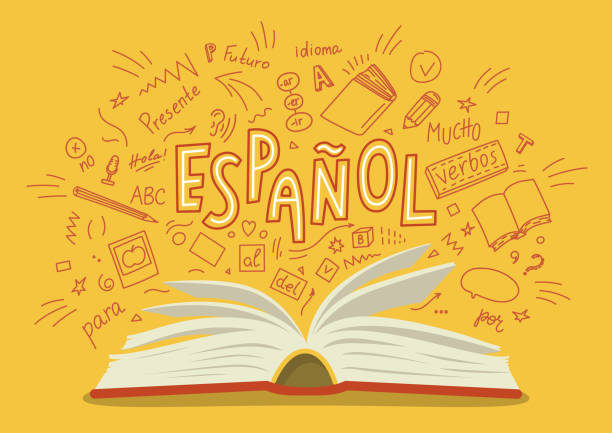

1. Math. Math is my favorite class overall, because I do really well grade wise, and it comes easy to me. I also really like the teachers I've had, such as Mr. Graybeal and Ms. Aguiar. I always have a great time in math.
2. MAKE. Make is one of my favorite classes, one, because of the friends I had, and two, just the cirriculum we did during class was super fun, and I really liked the projects we did (such as the catapult project.)

3. EP7. I really liked this class because we went exploring a lot, and there was a lot of freedom that we had.
4. Spanish (6th grade). I really liked how easy the class was, and it gave me an amazing opportunity to really dial in my spanish skills. The reason I specified 6th grade is because all of the other classes have been very stressful and not as fun.

5. Drawing and Painting. This was really fun because it was a very free class, and there weren't many rules. I also had a lot of fun with my friends, as I had two in that class. We would talk a lot and have a lot of fun. The class itself was also really fun, I really liked the drawing because I find drawing very relaxing.

These are my favorite classes, thank you for reading!